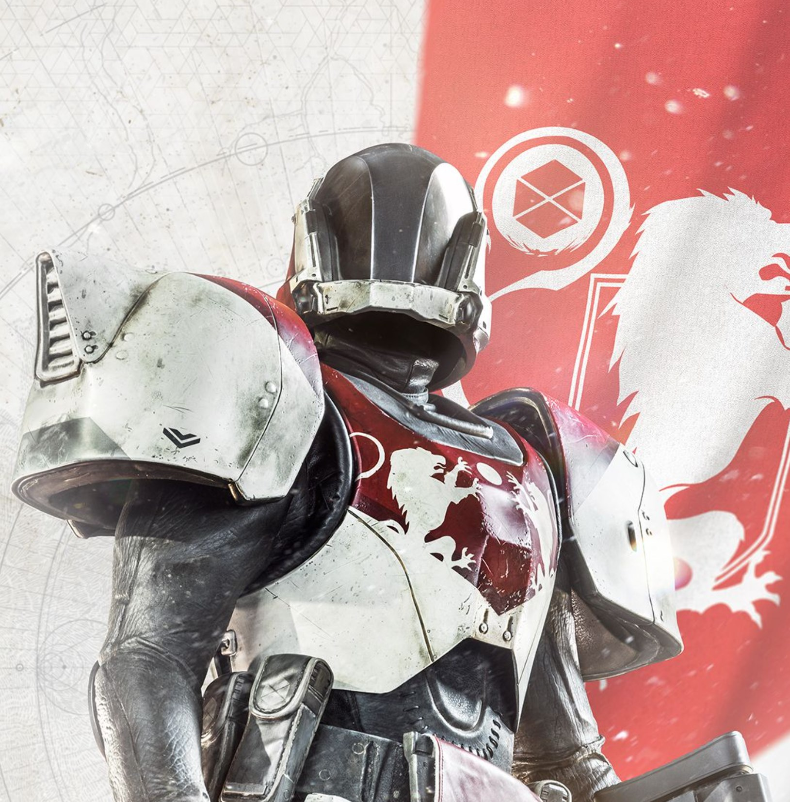

Beyond Light
TITAN - BEHEMOTH
CRASH LIKE AN AVALANCHE
Behemoths are high offense and high defense.
Creating solid Stasis crystals to provide cover
or platforms from which to leap, during their Super,
Behemoths can jump higher, faster, and farther, width
unlimited melee energy and high damage mitigation.
Below are some in depth discription of the abilities
Glacial Quake
Behemoths compel Stasis energy to attach to their body; covering thmselves in the frozen Darkness, forming a Stasis gauntlet on one hand, increasing their damage resistance in the process.
Shiver Strike
The Behemoth summons a Stasis gauntlet and lunges forward with explosive speed, smashing through anything through their way. Upon reaching their target they unnleash a devastating jab that sends their foe careeing backwards while slowing nearby enemies.
Ground Control
The Behemoth slams their gauntlet into the ground, sending out tremors of powerful Stasis energy that leave crystals in their wake and freeze all enemies in vicinity.